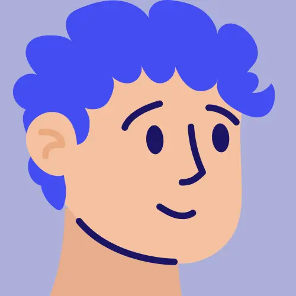

<mat-toolbar>
    <div class="other-user">
        <button
          mat-button
          [matMenuTriggerFor]="chooseChannelMenu"
          class="other-user-button"
          [class.menu-opened]="isMenuOpened"
          (click)="isMenuOpened = true"
          #chooseChannelMenuTrigger="matMenuTrigger"
        >
           <div class="image-with-badge">
          
          <div class="badge"></div>
        </div>
          <span>Username</span>
        </button>
        <mat-menu
          #chooseChannelMenu="matMenu"
          xPosition="after"
          (closed)="isMenuOpened = false"
          class="other-user-profile-menu"
          
        >
          <div>Platzhalter für Profil</div>
        </mat-menu>
      </div>

  </mat-toolbar>
  
